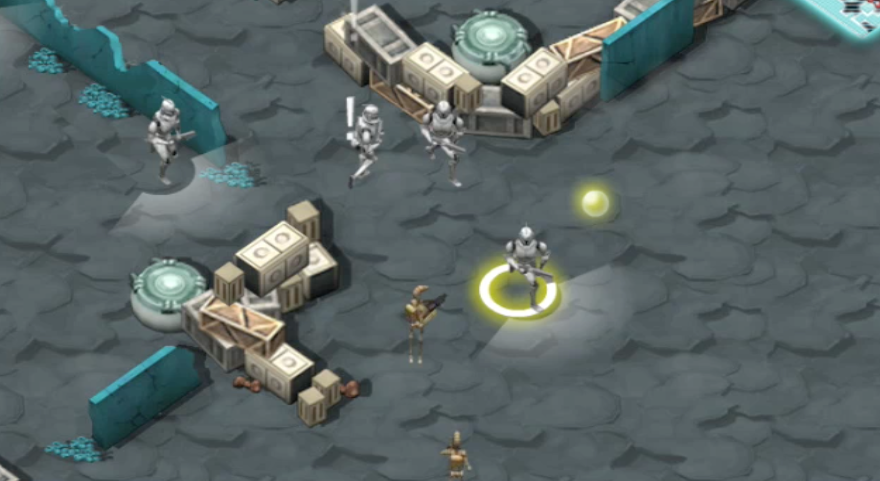

objectives
to build a series of online games to be released in-between season of the Clone Wars animated tv series.
role + responsibilities
creative director
- act as facilitator during stakeholder ideation session for the entire project course.
- led team of designers, developers, 3D animators/modelers and producer.
deliverables in this role includes game document writing (play mechanic, characters development, and overall game rhythm and dynamic).
client
lucas film | usa
deliverables
- Clone Wars Live Fire (Genre: Action) |
play game - Clone Wars Air Strike (Genre: Action) |
play game - Clone Wars Cad Bane Jedi Hunter (Genre: Shooting) |
play game - Clone Wars Sharp Shooter Training (Genre: Shooting) |
play game
. . . . .
#trigger, #shanghai, #losangeles, #VideoGames, #OnlineGames, #CreativeDirection, #ux, #wires, #IA, #GameFlow, #GameMechanic, #storyline
. . . . .